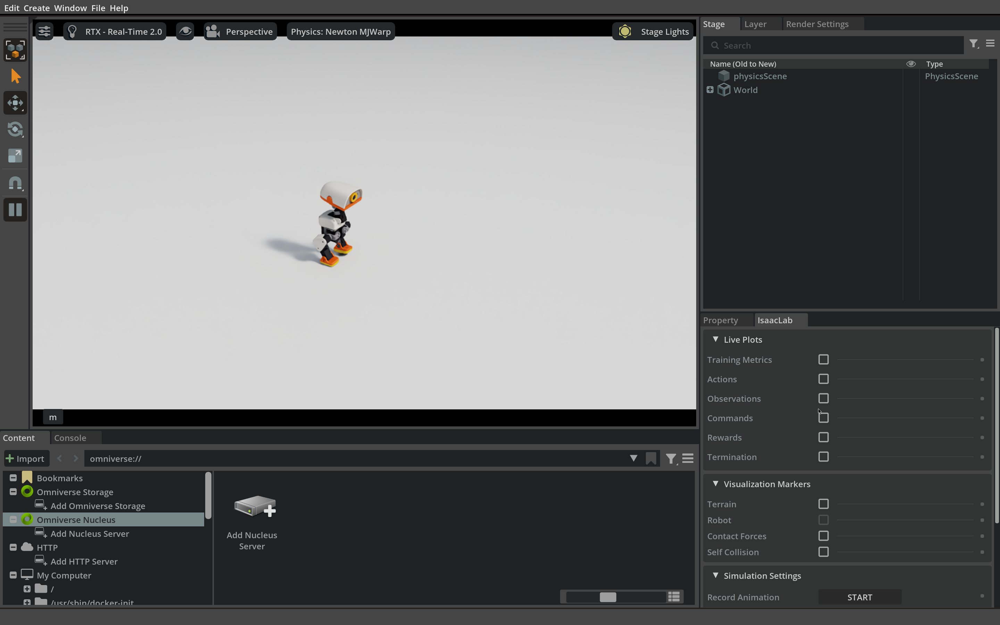

2.2 Mechanism and control timing#
Separate shells, joints, actuators, and sensors, then see how they form a controllable robot.
From assembly to components#
Microduck is a small biped: its legs support and move the body, the neck directs its view, and the trunk houses computing, power and connections. In Isaac Sim, the robot model holds joints, collision geometry and mass properties alongside the visual meshes; they define which motions and contacts can happen. Learning this structure first lets you connect joint names and action vectors to motion in simulation.
- Rotating servo
- Following parts
- Drive direction
Choose a part
Choose a motion
Joint angle
Colours are simplified to show what each part does; they are not the real paint. Part shapes, proportions, joint positions and axes come from the original CAD and the simulation model. The exploded spacing is only there to reveal the structure and is not an assembly sequence.
Once the 3D duck has loaded, go through the three views at the top:
The whole duck: find the six parts: head, neck, body, hip, knee and foot. Click a name to see which servos move it, click a part to look closer, and drag to turn the duck.
Exploded view: parts that belong together move apart as a group. The numbered labels match the parts in How motors drive joints and tell how many servos drive each one; a leader starts at each servo housing and they merge before the name. Leg labels count per side. The eye is the camera. The ToF range sensor sits on the same face board, right beside the eye. The CAD has only the board's window for it, not a part for the sensor itself, so a crossed circle marks its position.
How motors drive joints: choose a part, then a motion, or click a servo in the model. The thin white line is the servo's output shaft, and the white paper-ribbon arrow beyond its end shows the drive direction: drag the ribbon, or click the dot in its middle and fine-tune with the arrow keys. Coral is the rotating servo, violet the bracket that turns with it, and parts that stay still are drawn only as light outlines. The leg controls show the left leg; the right leg mirrors it.
All three views use the same parts: head 3 servos (head pitch, yaw and roll), neck 1, beak 1 (fixed in the simulation model), and per side hip 3, knee 1 and foot 1, 15 in total. Servos of one part are not always mounted together: each hip's yaw, roll and pitch servos sit in the body, the hip bracket and the thigh, so in the exploded view three leaders merge from three places into one Hip label.
The panel's \(\htmlData{sym=q_joint}{q}\) is the joint's angle in the simulation model. Code stores it in radians; the panel shows degrees (\(1\ \mathrm{rad}\approx 57.3^\circ\)), and the sign follows the right-hand rule about the joint axis. When standing, \(\htmlData{sym=q_joint}{q}\) is usually not 0 (the left hip pitch is about \(-26.2^\circ\)), so the panel also shows the change from the stand pose. A walking policy's actions are offsets added to these stand angles. Real servos also carry their own calibration offsets, so these readings are model joint angles, not raw servo encoder values.
Hardware revision and simulation joints
Of the 15 servos, the simulated policy drives 14 joints; the beak is fixed in the simulation model, so it cannot turn in the 3D duck. The controller board keeps the Raspberry Pi Zero 2 W shape from the CAD, while the current Beta electronics are based on RK3566. The camera, ToF sensor and IMU observe the task: the onboard policy in Section 4.1 uses them to find the ball and goal, and GR00T in Part 5 reads the camera images and body state.
Check your understanding
In How motors drive joints, compare the left leg's Hip roll and Hip pitch. When the joint turns, does the housing of the servo that drives it move?
Show explanation
For hip roll, no: that servo is fixed to the hip-yaw bracket above it, and its output shaft turns the bracket below together with the whole leg. For hip pitch, yes: that servo sits in the thigh and its output shaft is fixed to the hip bracket above, so the servo housing turns with the thigh, shank and foot around the shaft. Both mountings drive the joint; they differ only in which side of the joint moves. Neck pitch, head yaw and head roll use the second mounting too.
From mechanism to joint control#
This part answers a basic question: how do the 14 numbers a policy outputs become visible robot motion? First find the trunk, both legs and the head in the model, then follow the connection “trunk → hip → knee → ankle → foot”. Later, when you meet joint order, coordinate transforms or foot contact problems, you can locate them in the physical structure.
Swipe horizontally to see the full diagram
1Joint target q*
The policy gives target joint angles, which express an intention; a joint needs time to track them.
2Servos and joints
Actuators are limited by torque, speed and response, and contact also changes the actual angle, so look at both the joint targets and the actual state.
3Links and foot
The foot position follows from the links and joint angles together. Changing one joint moves the end of the chain and can change the support.
Joint angles set the relative pose of the links; combining these poses along a mechanical chain gives the position of the foot or camera relative to the body. With this relation in mind you can tell “the head turned” from “the body turned”.
Further reading: computing positions along a mechanical chain
A part's position only makes sense relative to some frame. A homogeneous transform holds a rotation \(\htmlData{sym=R}{R}\) and a translation \(\htmlData{sym=t_vec}{\mathbf t}\) together; multiplying them along a mechanical chain converts a point in the foot frame into the trunk frame. This is forward kinematics: computing where the end of the chain is from known joint angles.
Variable meanings
- \(T\)
- Homogeneous transformation matrix (4×4) that holds a rotation and a translation together, so transforms can be multiplied along a mechanical chain.
- \(R\)
- 3×3 rotation matrix: the orientation of the child frame relative to the parent frame.
- \(\mathbf t\)
- Translation vector: the position of the child frame's origin in the parent frame.
- \(\mathbf 0^{\mathsf T}\)
- 1×3 row of zeros; with the 1 in the corner it makes the matrix a 4×4 that can be chained by multiplication.
- \({}^{B}T_F\)
- Transform from the foot frame to the trunk frame: it expresses a point on the foot in body coordinates.
- \(q\)
- Vector of all joint angles along this mechanical chain.
- \({}^{i-1}T_i\)
- Transform between two adjacent links, set by the assembly position and the angle of this joint.
- \(q_i\)
- Angle of one joint on the chain (rad); the subscript is that joint's place in the chain.
The superscript \(\htmlData{sym=frame_B}{B}\) denotes the trunk frame and the subscript \(\htmlData{sym=frame_F}{F}\) the foot frame; each transform comes from a part's assembly position and its joint angle. A camera mounted on the head likewise needs the neck and head chain to compute where it points, so a head turn is not mistaken for a turn of the whole body.
In the exploded model, find the knee servo, the battery and the foot, and say what each does for actuation, power and support.
Parts, joints, and degrees of freedom#
A pen held at its tip can rotate in several directions, while a hinge normally rotates around one fixed axis. Robot joints impose similar constraints. Degrees of freedom count the independent variables needed to describe permitted motion; a component count describes physical pieces. The viewer shows 70 components, yet the policy outputs actions for only the 14 active joints.
Region |
Active joints |
Main role |
|---|---|---|
Each leg |
Hip yaw, roll, pitch; knee; ankle: 5 joints |
Support the body and place the foot |
Neck and head |
Neck pitch; head pitch, yaw, roll: 4 joints |
Orient the camera and head |
Beak |
Physical servo; not controlled by this policy |
Shown in 3D model, excluded from the 14-action interface |
In the 3D duck's How motors drive joints view, choose Hip and turn the left leg's hip yaw, hip roll and hip pitch in turn, inspecting the three servo outputs and their nearby bearings. The servo drives the joint, the bearing supports the rotating part, and brackets connect adjacent joints. For each joint, notice which parts turn and which remain only as outlines.
How software moves the mechanism#
Policy action
Joint targets
Actuator torque
Physics update
New observation
The policy outputs actions, and the action interface turns them into joint targets. Actuators produce torque from the difference between target and measured state; the resulting motion also depends on contact, gravity, inertia and friction.
The policy runs at 50 Hz and physics at 200 Hz, so each action spans four physics steps. The backlash model represents transmission play with passive joints; the physics engine computes them, and they are not policy outputs.
Describe motion with frames#
Frame |
What is expressed here |
|---|---|
World |
Pitch, goal, and overall robot position |
Body |
Forward, lateral, and turn commands; ball relative to the robot |
Camera |
Image rays and detected target directions |
Joint-local |
A joint’s axis and angle |
Check your understanding
If the head joints stay fixed, is the camera image necessarily stable?
Show explanation
No. Body pitch and roll move the neck and camera. Image stability depends on camera orientation relative to the world, not only on joint angles.
Exercise: trace one load path#
Start with the assembled model and trace upward from the ankle through the shin, knee, thigh and hip. When the foot is on the ground, support reaches the body along this path. Then separate the model and click the servos near a joint to see how adjacent links connect.
Besides a motor, a servo contains reduction gears, position feedback and control electronics. After receiving a target angle it needs time to track it, limited by available torque, speed, friction and backlash. This section observes that gap between target and actual angle; Section 3.2 shows how training with randomized actuator properties helps a policy cope with it.
What the policy receives and produces#
Section 2.1 runs inference with a trained policy: it maps the current observation to 14 joint actions while its neural-network parameters stay fixed. Changing the velocity command tests how the same model responds; changing the policy itself requires training or loading different weights.
Observation, in interface order |
Width |
What it tells the policy |
|---|---|---|
Angular velocity and projected gravity |
6 |
Body rotation and tilt |
Relative joint positions |
14 |
Pose relative to the nominal posture |
Joint velocities |
14 |
Motion at each joint |
Previous action |
14 |
Previous control output and temporal context |
Velocity, head, and body commands |
3 + 4 + 6 |
Requested behavior |
Remember the policy network in Section 2.1? These observations are concatenated in a fixed order and normalized to form its 61 inputs. Even with the same input shape, reordering joints breaks their meaning: the policy might read a knee as a hip. The course entry points therefore keep joint order, nominal posture and control timing fixed. Experiment with commands, duration and output folders first; change the observations only once you understand the interface.
With the policy inputs and outputs defined, we can now follow how the policy exchanges data with the physics engine.
Close the command, action and feedback loop#
Isaac Lab organizes observations and actions, Newton computes motion and contact, and Isaac Sim displays the scene. Follow the control loop to check three things: are the inputs right, are actions updated on time, and does the actual motion follow the command?
Scroll horizontally to view the full diagram
Isaac Lab organizes the learning task and Newton advances the physics; Isaac Sim rendering and sensors are added when camera images or an interactive window are needed. Separating these roles helps you choose how to run training and validation.
Swipe horizontally to see the full diagram
1Observation oₜ
The observation packs robot pose, joint state, the previous action and the current velocity command into a fixed order. Order and normalization must match training.
2Policy π
The policy maps the 61-dimensional observation to a 14-dimensional action. The output passes through the action conversion and actuator model before it reaches the joints.
3Newton simulation
Newton advances dynamics and contact and produces a new pose and joint state. The policy reads a fresh observation on the next tick, so actions always sit inside a feedback loop.
Variable meanings
- \(\mathbf a_t\)
- The 14-dimensional action (normalized values) output by the policy in the current control period.
- \(\pi_\theta\)
- The walking policy network; the subscript stands for its trained parameters, fixed during inference.
- \(\mathbf o_t\)
- The 61-dimensional observation given to the policy in the current control period.
- \(\mathbf q_t^{*}\)
- Joint target angles sent to the actuators in the current control period (rad).
- \(\mathbf q_{\mathrm{default}}\)
- Joint angles of the default standing pose.
- \(s\)
- Action scale; 1 for this policy.
\(\htmlData{sym=q_target}{\mathbf q_t^{*}}\) is the joint target, \(\htmlData{sym=q_default}{\mathbf q_{\mathrm{default}}}\) the default standing pose, and the action scale \(\htmlData{sym=s}{s}\) is 1. An action is therefore an offset from the standing pose; the actuators and physics engine compute the actual motion from it. Even with matching input and output sizes, a different joint order, offset or observation normalization makes the actions wrong.
1Build the observation, then run the policy
Update the observation history and feed the policy observation to the locomotion policy.
action = policy(
env.observation_manager.compute(update_history=True)["policy"]
)2Process the policy action
The action manager receives this policy output and prepares it for simulation.
env.action_manager.process_action(action)3Advance four physics steps
One policy action spans 4 × 5 ms; each step writes the action and updates the scene, giving 50 Hz control over 200 Hz physics.
for tick in range(4):
env.action_manager.apply_action()
env.scene.write_data_to_sim()
env.sim.step(render=not a.headless and tick == 3)
env.scene.update(0.005)This excerpt is the loop in the figure: the Isaac Lab observation manager builds the policy input, the action manager processes the action and drives the actuators, and Newton then runs four 5 ms physics steps. The full program also advances counters and checks for falls.
Below is a run of this program recorded in the course container; you do not need to run it. The robot first settles on the ground with its joints locked (Section 3.2 explains this start-up); the program then sends a zero velocity command for about 2 seconds, followed by a constant 0.25 m/s forward command, for a total of 12 seconds of simulated time. The stillness at the start is not an unresponsive policy.
python3 scripts/run.py walk \
--model models/walk.onnx --velocity 0.25 0 0 \
--seconds 12 --seed 202 \
--output outputs/final-live-livewShow the actual output and how to read it

report.json printed at the end of the terminal output (the startup section recording the settling is omitted)
{
"status": "completed",
"seed": 202,
"model_sha256": "2fc7f8ee6acd7d0d3f66a99927b5d5a56589aeed02ec714de329b252d5ccf492",
"command": [
0.25,
0.0,
0.0
],
"physics_hz": 200,
"policy_hz": 50,
"scope": "nominal walking observation; not full-task evaluation",
"viewport": {
"status": "ok",
"requested": [
960,
540
],
"render_texture": [
960,
540
],
"resolution_scale": 1.0,
"render_every_control_steps": 2
},
"real_time_factor": 0.9490529826355415,
"fell": false,
"simulated_seconds": 12.0,
"automatic_resets": false
}Start with three fields: status is completed, fell is false and simulated_seconds is 12.0, so the run lasted the full time without falling; automatic_resets false means no automatic reset hid a failure. model_sha256 matches models/manifest.json, confirming that the fixed official model was used. viewport records the window's display settings (drawn at 960×540, redrawn every 2nd control step), and a real_time_factor of about 0.95 means the 12 simulated seconds took only slightly longer in real time; both describe the window only and do not affect the simulation result.
Then look at trajectory.json in the same folder, one position every 0.1 s. In the roughly 10 seconds after the forward command starts, the body moves from (0.00, 0.00) m to (1.07, 0.15) m: about 1.08 m in a straight line, roughly 0.11 m/s on average, less than half of the 0.25 m/s command, and the direction of travel drifts to the left, about 8° over the whole displacement and about 15° in the last 2 seconds. A velocity command is a request to the policy; the actual speed and direction come from the policy, the actuators and contact together. “It did not fall” is not enough: compare the actual motion with the command.
Key code parameters
--model models/walk.onnx reads /workspace/Microduck-Workshop/models/walk.onnx in the container, the official walking model in the host repository's models/ (read-only); the robot model is lab/assets/microduck_contact.usda; report.json and trajectory.json go to outputs/final-live-livew, given by --output.
Variable meanings
- \(\mathrm{RMSE}_v\)
- Root-mean-square error of horizontal velocity tracking (m/s); smaller means the actual velocity follows the command more closely.
- \(N\)
- Number of sampled instants in the statistic.
- \(t\)
- Index of a sampled instant.
- \(\|\cdot\|_2^2\)
- Squared length of the velocity error vector.
- \(\mathbf v_{xy,t}\)
- Actual horizontal body velocity at that instant (m/s).
- \(\mathbf v_{xy,t}^{\mathrm{cmd}}\)
- Commanded horizontal velocity at the same instant (m/s).
The root-mean-square error summarizes velocity tracking over a period; this section sets no universal pass threshold: first confirm there is no fall, then compare directions and speeds. Foot contact, actuator delay and backlash make joints lag behind their targets, which is why the policy reads a new observation every tick.
You now know how the policy reads its state and outputs actions, and how the servos and the physics simulation carry them out. Section 3.1 moves from loading a ready-made model to training one: Isaac Lab lets a policy learn to walk through repeated trials.